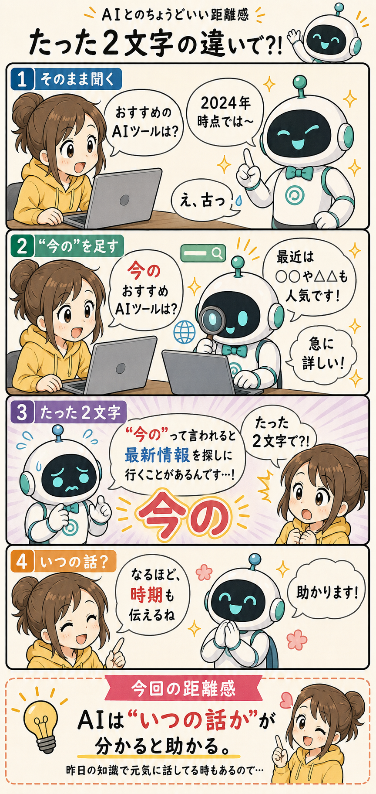

#023
たった２文字の違いで？！
“いつ時点の話？”が伝わるだけで、急に正解率が上がることがある。

メモ
AIに質問して、「なんか古いな…」ってなる時があります。
おすすめアプリ、人気サービス、料金、仕様変更。そのへんは、数ヶ月でもかなり変わる。
でもAIは、何も言わないと「知ってる範囲」で元気に答えることがあります。
こちらは普通に聞いただけのつもりでも、AI側は「いつ時点の話か」が分からない。
そこで地味に効くのが、「今の」「最近の」「2026年版」みたいな時間の情報。
たとえば、「おすすめのAIツールは？」と聞くのと、「今のおすすめAIツールは？」と聞くのでは、急に最新情報を探しに行くことがある。
たった２文字なのに、けっこう差が出る。
もちろん毎回うまくいくわけではないし、AIによって動き方も違います。でも、「Web検索して！」と細かく指示する前に、まず“いつの話か”を自然に添えるだけでも、かなり会話が噛み合いやすくなる。
逆にAIは、時間情報がないと昔の知識を、今のテンションで話してくることもある。ちょっと自信満々なのがまた困る。
人間同士でも「最近どう？」って聞くと、自然と最新の話になる。AIにも、そのくらい自然に“時間”を渡してあげると、意外と扱いやすくなるのかもしれません。
今回の距離感
最新情報を聞きたい時は、「Web検索して」より先に、“今の”“最近の”“2026年版”みたいに時間を添えるくらいがちょうどいい。